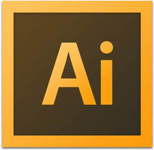
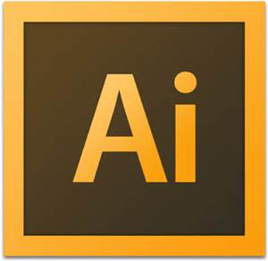

Languages: C , C++, Core Java, Java Script ,VB 6.0, VB .NET,SQL, HTML, ASP,XML,C-sharp, ASP.Net, VB.NET, ArcObjects, Python

Database: Oracle 9i, SQL, MS Access, PostgreSQL


Tools: Dreamweaver, Eclipse, Net beans 6.0, Pestar UML, WavPad, Visual Studio 2010, Python scripter,Adobe illustrator cc
 

* ArcGIS Desktop(9.3, 10, 10.1, 10.3), ArcGIS Server API, PGAdmin, QGIS ,ERDAS Imagine,Ecognition


* Python scripting, ArcObjects with C#,
* Basic knowledge on Java script API, Flex API, Silverlight API, Google maps API

| Diploma in Dot Net Certified by SEED INFOTECH.) | Jul 2011- Oct 2011 |
|---|
* VB.NET
* C #
* Asp.net